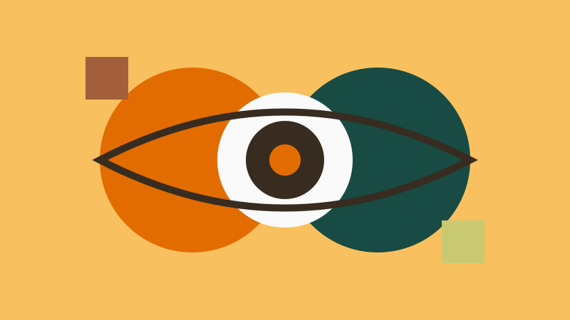
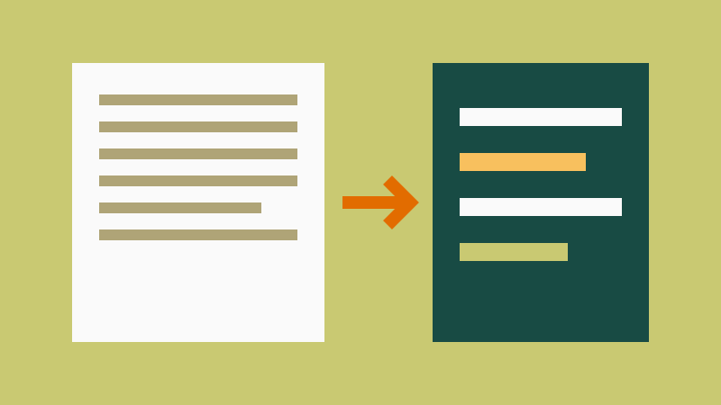
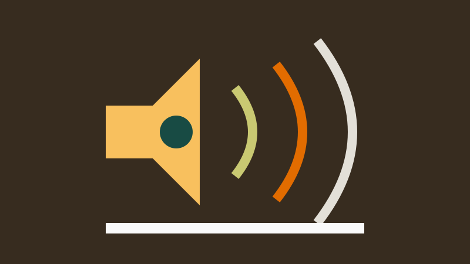

Ginko's Prototype Playground
Dismantling barriers, building belonging.
Prototypes in progress — test them, break them, rebuild them.
Featured Works
Prototypes

PEERSPECT
One of Ginko's prototypes — details to come.
View prototype
Alt-Text Studio
AI drafts alt text, with confidence and a WCAG check.
View prototype
Plain-Language Government AI
Dense policy rewritten plainly, with unsure bits flagged.
View prototype
Co-Design Synthesis
Workshop notes grouped into themes, traced to speakers.
View prototype
Voice-First AI for Low Vision
Speak, listen, confirm — built for low vision.
View prototype
AI Accessibility Auditor
Audit a page, approve fixes, watch the score rise.
View prototypeConsent-Aware Research Assistant
Synthesis that links every insight, respects consent.
View prototype
All prototypes
See every prototype subpage in one place.
See all prototypes